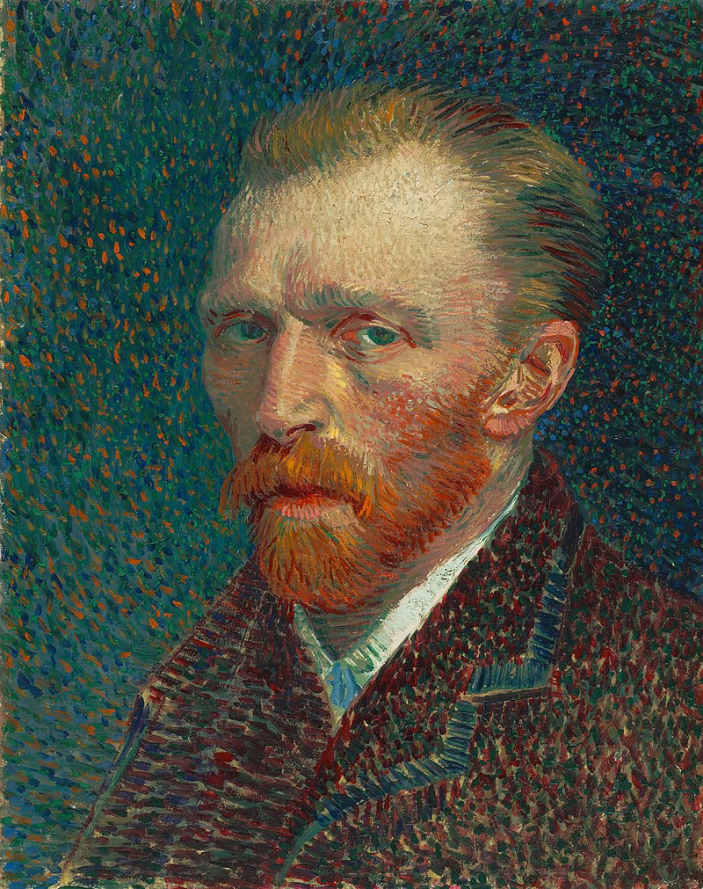

Vincent Vangogh
Vincent Willem van Gogh Zundert (1853-1890) fue un pintor neerlandés, uno de los principales exponentes del postimpresionismo. Pintó unos 800 cuadros (entre ellos 43 autorretratos y 148 acuarelas) y realizó más de 1600 dibujos. Una figura central en su vida fue su hermano menor Theo, marchante de arte en París, quien le prestó apoyo financiero de manera continua y desinteresada. La gran amistad entre ellos está documentada en las numerosas cartas que se intercambiaron desde agosto de 1872. De las 800 cartas que se conservan del pintor, unas 650 fueron para Theo; las otras son correspondencia con amigos y familiares.
Leer mas
